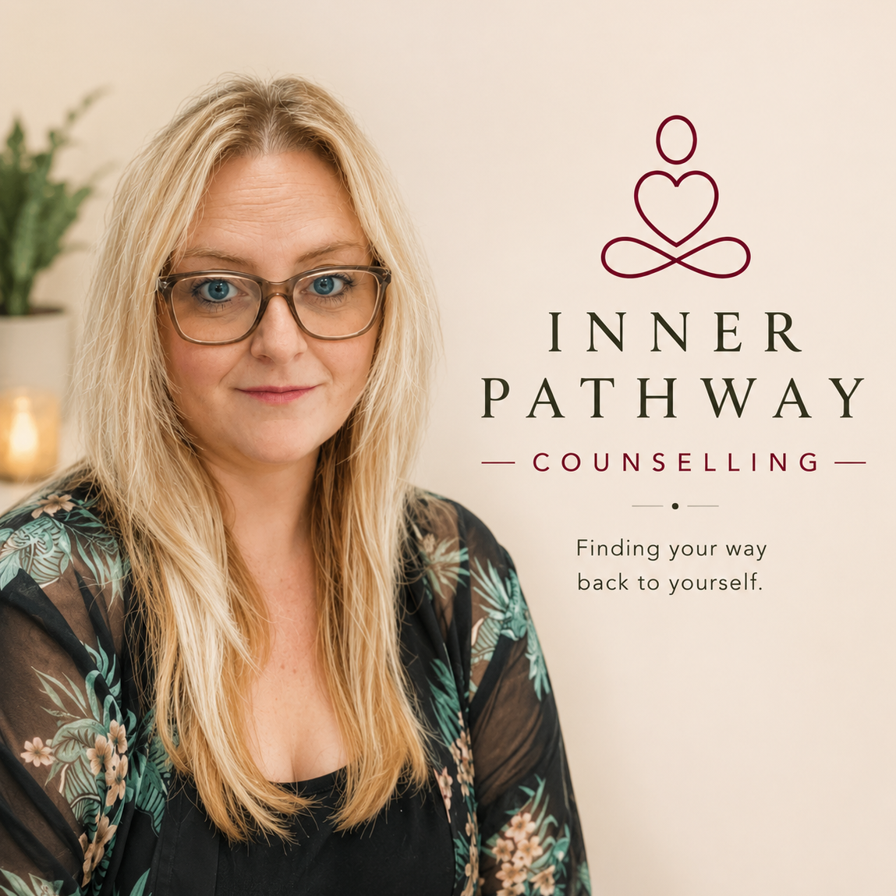
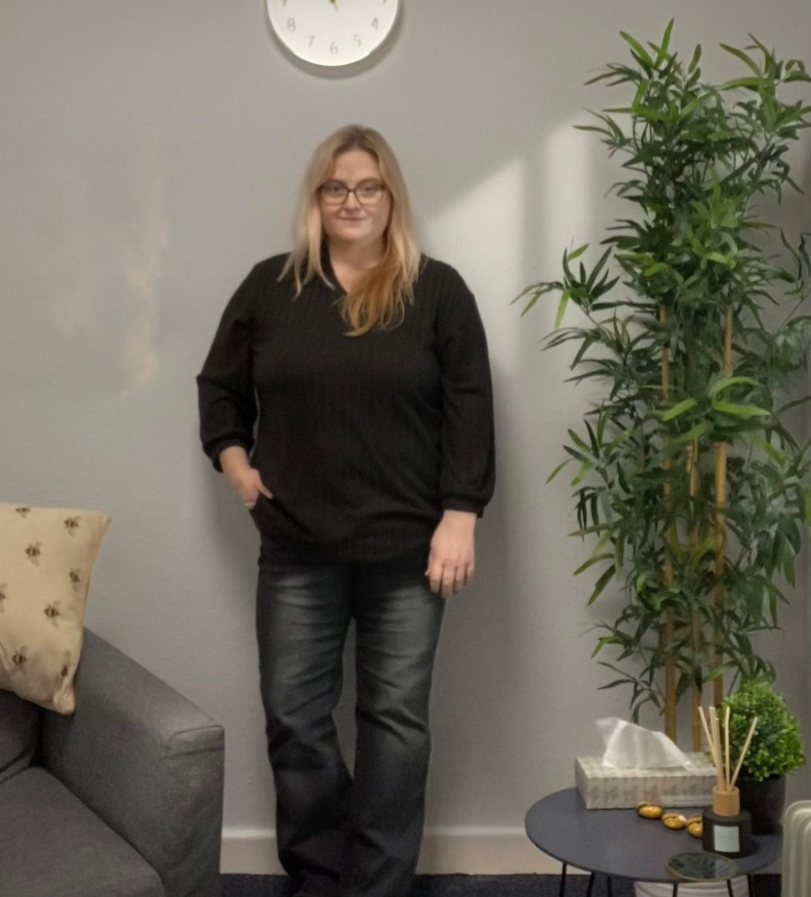
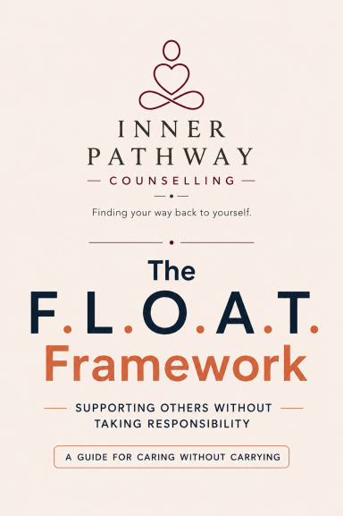
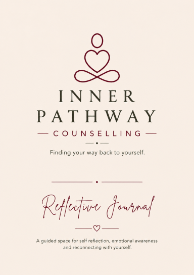

Adults
Support with anxiety, low mood, low self-esteem, relationships, difficult past experiences, life changes or anything else that feels important to understand.
Counselling for adults · Skelmersdale · Online · Telephone
Counselling can give you space to understand what is happening beneath the surface, notice the patterns that keep you stuck and reconnect with what you need.
A free 15-minute introductory call is available, with no obligation to book counselling.


About Debi
I'm Debi, the counsellor behind Inner Pathway. Before becoming a counsellor, I spent 16 years supporting neurodivergent adults, people with learning disabilities and their families.
That experience, together with my own experience of being on the other side of the counselling room, shapes how I work. I offer a warm and honest space where you can make sense of what has happened, understand yourself more clearly and move forward at your own pace.
I won't tell you what your answers should be. My role is to work alongside you while you explore what matters to you.
Who it's for
Support with anxiety, low mood, low self-esteem, relationships, difficult past experiences, life changes or anything else that feels important to understand.
Space for people who spend so much time looking after other people that their own needs can disappear into the background.
Neuroaffirming counselling for autistic and ADHD adults, including people diagnosed or discovering their neurodivergence later in life.
Ways to work together
In-person counselling at Beacon House in Skelmersdale, with a dedicated space away from everyday demands.
Counselling from a private place that works for you. Debi has completed specialist training in online and telephone counselling.
A flexible option if talking without a camera feels more comfortable or practical.
Fees
Standard counselling sessions are 50 minutes.
50 minutes · face-to-face, online or telephone
Reduced rate for carers. Ask when you enquire if this rate applies to you.
Professional background
Debi is a qualified counsellor and an Individual Member of the British Association for Counselling and Psychotherapy (BACP).
Resources

A simple framework for people who care deeply and can find themselves carrying other people's feelings, problems or responsibilities.

A guided journal using the INNER and PATHWAY frameworks, with prompts designed to help you notice, accept and reconnect with yourself.
Links to the current resource destinations will be added before launch.
Contact
You do not need to include personal or counselling detail in your first message. A name, a way to contact you and a simple request for an introductory call is enough.
Inner Pathway is not an emergency service. For urgent mental health help in England, use NHS 111 online or call 111. In an emergency, call 999.